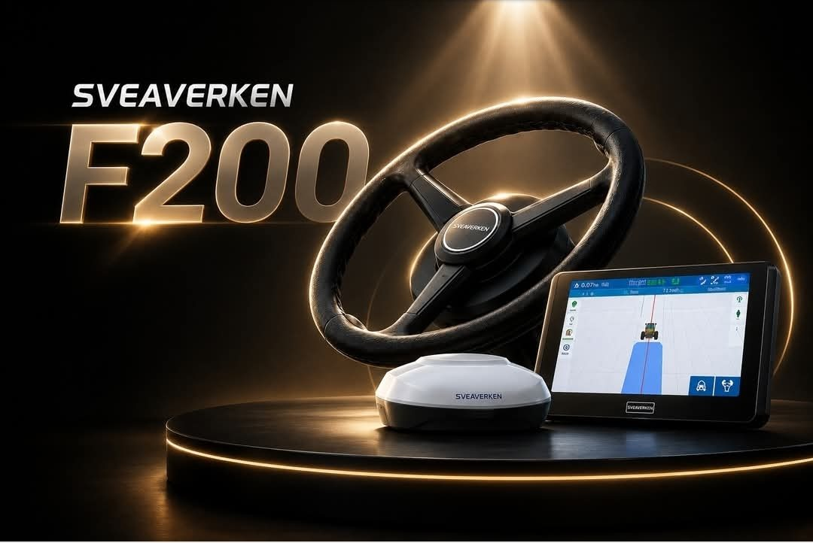
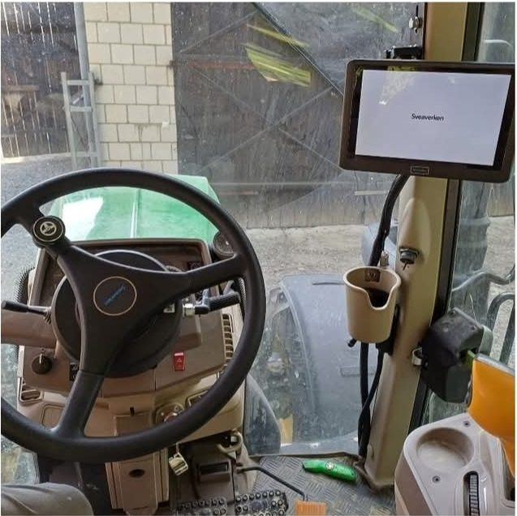
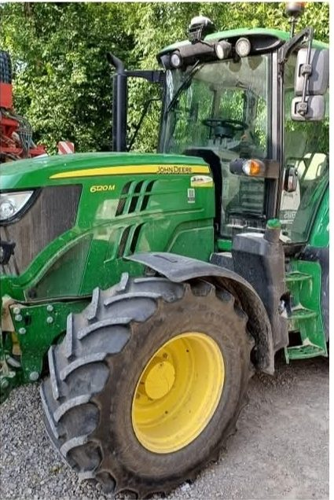
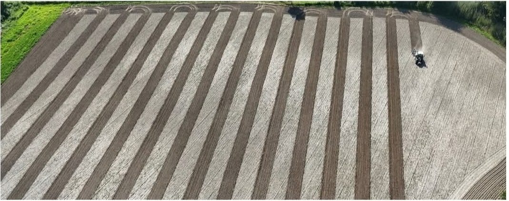

Sveaverken sistemi za automatsko upravljanje sa RTK preciznošću ±2,5 cm. Dva modela — F100 od 3.500 € i F200 od 4.500 €. RTK signal, unos parcela i kompletna instalacija ulaze u cenu.

Ovako sistem izgleda u stvarnim uslovima — na traktoru, na njivi, posle ugradnje koju smo sami odradili.
Koliko bi posao bio lakši kada bi traktor u svakom prolazu išao tačno tamo gde treba?
Zakaži demonstraciju


Ko ceo dan drži liniju na oko, preklapa 15–25 cm po prohodu. Na 200 hektara i pet operacija godišnje, to su gorivo, seme, đubrivo i hemija koji dvaput odu u istu zemlju.
RTK korekcija drži mašinu u granici od 2,5 cm. To je razlika između navigacije koja samo pomaže i autopilota koji drži liniju umesto vas.
Veliki ekran na dodir i pregledan meni. Obuka je kratka — sistem je pravljen da se radi na njemu, a ne da se uči.
Radi noću, u prašini i magli, na ravnici i na težem terenu. Linija ostaje linija bez obzira na vidljivost.
Nema duplog prolaza i nema propuštenih traka. Troši se tačno onoliko koliko njiva traži, ni gram više.
Parcele koje sami izaberete ostaju upamćene. Sledeće sezone samo izaberete njivu sa spiska i nastavite gde ste stali.
Godinu dana uz F100, tri godine uz F200. Bez pretplate i bez skrivenih troškova u tom periodu.
Automatsko upravljanje za setvu, prskanje, đubrenje, obradu i ostale radove — na traktorima velikog broja marki.
Ugradnju radimo mi — uređaj, antena, ekran i kalibracija. Sve na jednom mestu, ne šaljemo vas nikom drugom.
Deset njiva po vašem izboru unosimo besplatno — na godinu dana uz F100, na tri godine uz F200. Granice, međe i A-B linije ostaju upamćene.
Vi vodite računa o priključku i uvratini, mašina drži prohod u centimetar. Preklapanje pada na nulu.
Sve funkcije prolazimo sa vama na njivi. Posle toga ostajemo dostupni za pitanja i servis.
Podesite klizače prema svojim brojkama. Računica polazi od toga da autopilot spušta preklapanje na oko 0,5%.
Ovo je procena, a ne obavezujuća ponuda. U računicu nisu ušli ušteda vremena, duži radni dan i manje trošenje mašine.
Razlika nije u preciznosti — oba sistema drže ±2,5 cm. Razlika je u tome koliko dugo RTK signal i parcele idu bez doplate.
Razlika u ceni je 1.000 €, a F200 nosi dve godine RTK signala više. Ako sistem držite duže od dve sezone — a držaćete ga — F200 je jeftiniji izbor.
Da. Sistem je kompatibilan sa velikim brojem traktorskih marki i ne zahteva fabričku pripremu za automatsko upravljanje. Pošaljite marku i model, pa ćemo potvrditi.
Preciznost je ista — oba drže ±2,5 cm. Razlika je u trajanju: uz F100 dobijate RTK signal i parcele na godinu dana, uz F200 na tri godine. F200 je novija generacija.
Kad istekne — posle godinu dana kod F100, odnosno tri godine kod F200 — signal se produžava po dogovoru. Uslove kažemo unapred, bez iznenađenja.
Deset parcela ide besplatno uz oba modela, po vašem izboru. Za dodatne parcele javite nam se — rešavamo dogovorom.
Ne. Vozač je u kabini i nadzire rad. Sistem preuzima volan i drži prohod, dok priključak, uvratinu i bezbednost kontroliše čovek.
Ugradnja je brza i radimo je mi, sa kalibracijom i obukom na njivi. Termin biramo tako da vam ne poremeti radove.
Zavisi od broja operacija i cene repromaterijala. Unesite svoje brojke u kalkulator za grubu procenu, a kroz razgovor ćemo izračunati tačnije.
Zakažite demonstraciju na terenu ili nas jednostavno pozovite. Odgovaramo na sva pitanja i pre nego što išta kupite.